Более понятное меню
Компактные разделы в две колонки, подходящие значки, пояснения и управление мышью или клавиатурой. Крупные индикаторы включения и отключения; текущий сид всегда виден.
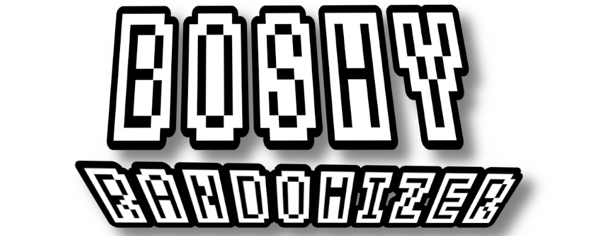
GitHub ↗Открой Boshy заново. Каждый сид — новое приключение.
Знакомые миры. Неожиданные пути. Вернись в I Wanna Be The Boshy: новые сочетания встреч, случайные награды и маршрут, которым можно поделиться.
Опубликованная версия: 2026.10.23.1
Версия в разработке · пока недоступна для скачивания →
Нужна собственная папка Boshy или ZIP. Оригинальная игра не включена.
Скачать I Wanna Be The Boshy на Grynsoft ↗
От загрузки до первого забега →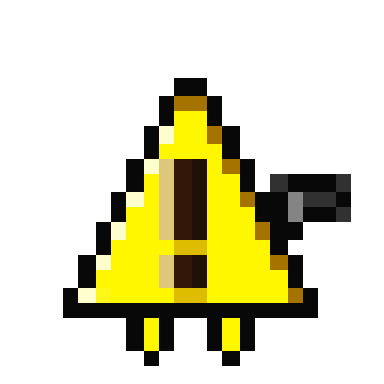
Эти изменения проверяются в предварительной версии 44.0. Кнопки скачивания по-прежнему ведут на опубликованную версию 2026.10.23.1. Новые установщики появятся с отдельным выпуском.
Компактные разделы в две колонки, подходящие значки, пояснения и управление мышью или клавиатурой. Крупные индикаторы включения и отключения; текущий сид всегда виден.
До продолжения игры видны местоположение, текущий персонаж, собранные предметы и персонажи. Новых персонажей можно выбрать через F3, если выбор персонажа не заблокирован.
В оригинальной комнате настроек доступны классические 4:3 и растянутые 16:9; F4 переключает полный экран. Язык и звуковой набор сохраняются после перезапуска. Отдельный модификатор отключает тряску экрана.
Фоны меняются целиком вместе со связанными слоями и эффектами. Музыка уровней и боссов перемешивается отдельно. Звуковой набор и соответствующий экран смерти — личные настройки, не входящие в сид.
Откройте LiveTracker из главного меню: он использует язык игры и показывает прогресс. Результаты появляются поверх титров после Solgryn, закрываются крестиком справа вверху и исчезают при перезапуске через F2.
Индикаторы прогресса, корректная отмена во время подготовки и экран завершения с запуском по желанию. Windows принимает ваш ZIP или папку оригинального Boshy; настройка Linux добавляет игру в Lutris вместе с изображением.
В новых забегах Randomizer и Boss Rush боссы Bomberman, Questionmark и Ridley изначально отключены. Их можно включить вручную; существующие сохранения и импортированные сиды сохраняют свой выбор.
Предварительная версия 44.0: пройдены 396 автоматических тестов кода и 11 проверок игры в Wine. Отмена установки, повторная попытка, завершение и удаление также проверены в Wine. Новая проверка именно этой версии в Windows 11 ещё предстоит.
Более стабильные эффекты спрайтов, исправленные выходы после боссов, восстановление фокуса окна в Windows и непрерывная музыка при удалении сохранения.
Дополнительные наборы Kamilia 3 и WannaFest22 используют раздельную музыку уровней и боссов.
Каталоги по назначению, упрощённое управление меню и воспроизводимая сборка установщиков.
Удиви меня
Знакомая игра в новом порядке.
Перемешивай уровни и боссов, объединяй предметы и персонажей в общий пул наград сундуков. В Advanced выбираются списки и количество. Рекомендуется семь уровней и семь боссов, по возможности поочерёдно, затем Solgryn.
Хочу цели для сбора
Список целей. Неизвестный путь.
Собери случайный список оригинальных предметов; количество и обязательные боссы настраиваются. Меняются точки назначения, но не награды. Выполни цели, чтобы открыть финал с Solgryn.
Оригинальный маршрут
Твой путь. Твои правила.
Оригинальное прохождение и сундуки. Можно выбрать стартового персонажа, ротацию и хаки; сначала эти дополнения выключены.
Только боссы
Сразу к сражениям.
Выбирай боссов и число встреч — по умолчанию семь. После них тебя ждёт Solgryn.
Больше платформинга
Миры становятся испытанием.
Выбирай уровни и количество участков — по умолчанию семь. После маршрута следует финал с Solgryn.
Разделённые миры, мини-боссы, секреты и бета-бои с Ridley, Questionmark, Bomberman и Old Sonic. Список выбирается в Advanced. Переходы используют состояние игры вместо пикселей.
Любой сундук может дать предмет или персонажа. Необязательная ротация использует доступных героев и добавляет новых после получения. Ручной выбор F3 при ротации заблокирован.
Компактный код содержит сид и настройки забега. Копируй, вставляй, проверяй и просматривай его в меню или создавай новый. Для сравнения забегов нужна одинаковая версия.
Каждый слот хранит отдельный забег и открытия персонажей. В меню видны место, сложность, герой и прогресс; там же можно продолжить, создать или удалить сохранение.
Отдельное окно с таймером, смертями, местом, предметами, персонажами, боссами и копированием сида. Оно учитывает режим, выделяет цели Target Select и анимирует новые находки.
После Solgryn появляется отложенный полупрозрачный итог со статистикой и копируемым сидом. Анимация смерти и титры продолжаются.
Персонажи и декорации интро меняются при запуске. Sprite Chaos перемешивает проверенные фоны с анимированным параллаксом, декор и материалы платформ. Слои настраиваются отдельно, фон можно затемнить. Перекраска врагов и боссов — бета; формы, атаки и коллизии сохраняются.
Меняй снаряд и эффект выстрела независимо от героя: после участка, смерти, обоих событий или в случайный момент внутри выбранного интервала. Секунды и минуты настраиваются; по умолчанию пять минут.
Используются отдельные наборы: музыка уровней для уровней, музыка боссов для боссов. Дополнительные локально импортированные наборы Kamilia 3 и WannaFest22 добавляют музыку и эффекты. Они не входят в загрузки.
В Advanced → Hacks выбирай дополнения для тренировки, разнообразия или неожиданностей.
Записи опубликованной версии. Новое меню, описанное выше, относится к следующему обновлению. Откройте превью, чтобы увидеть всю анимацию. Видео смерти содержат звук; GIF — без звука. Воспроизведение начинается только после открытия превью.
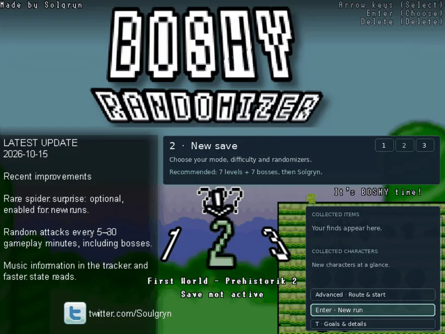
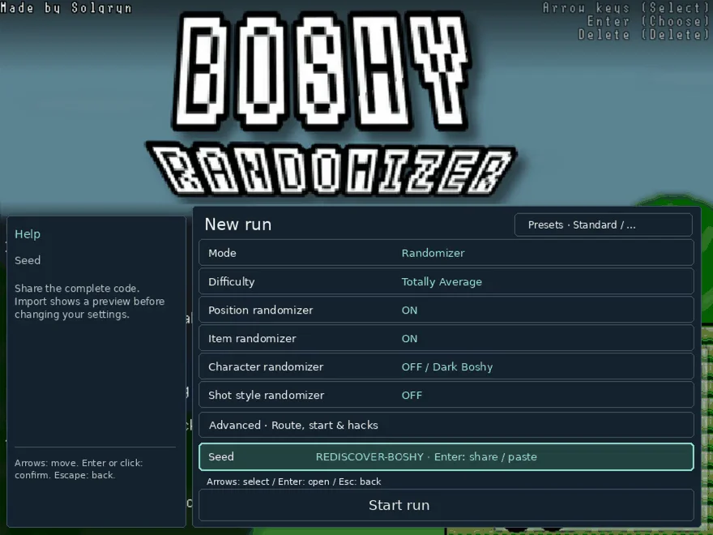
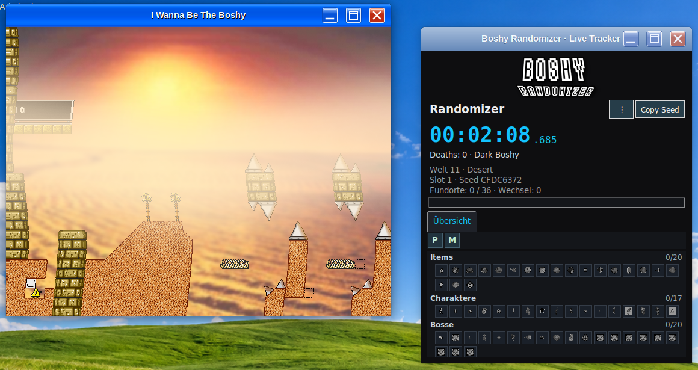
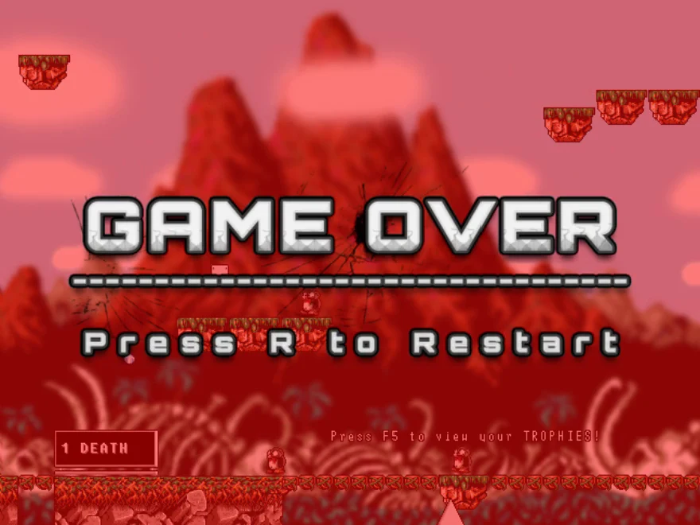
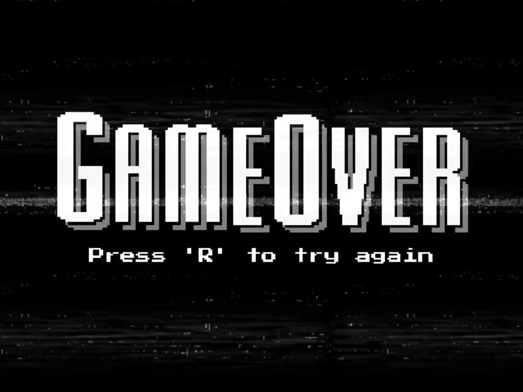
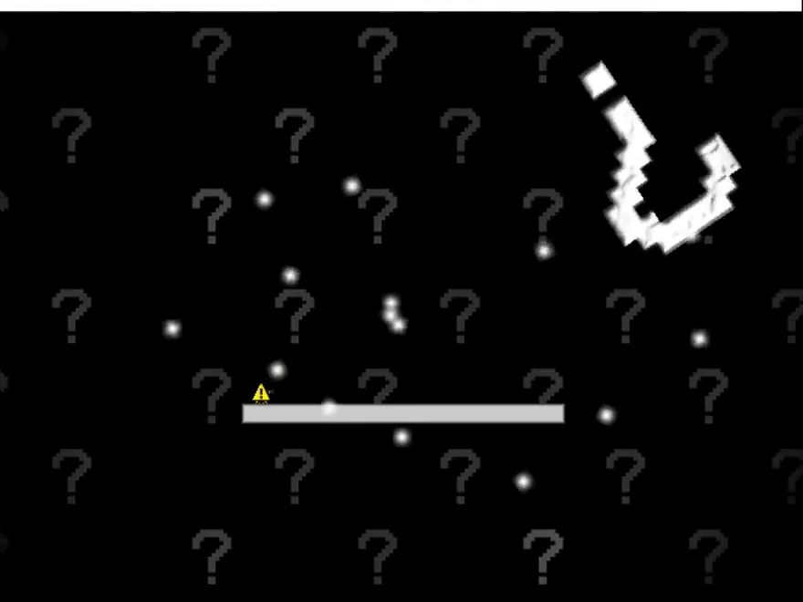
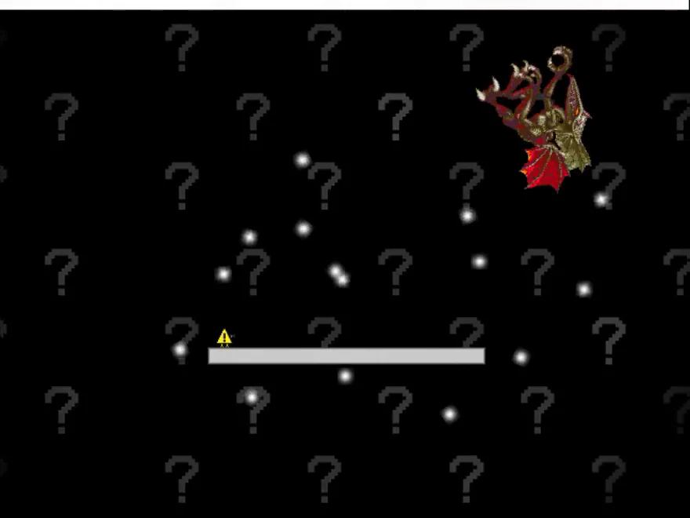
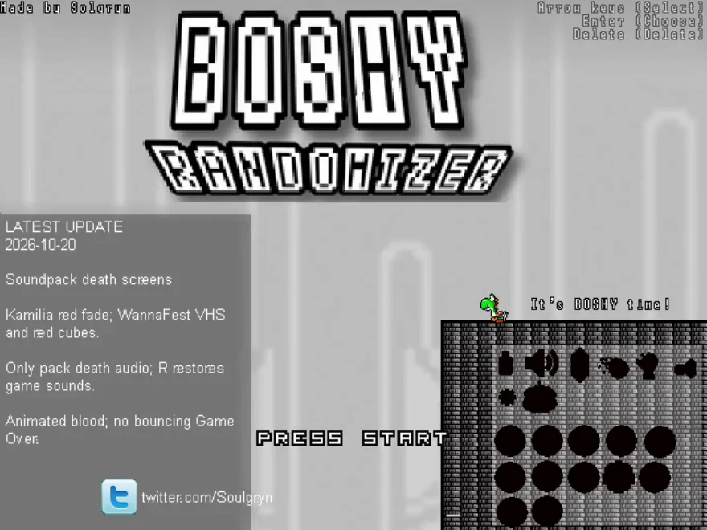
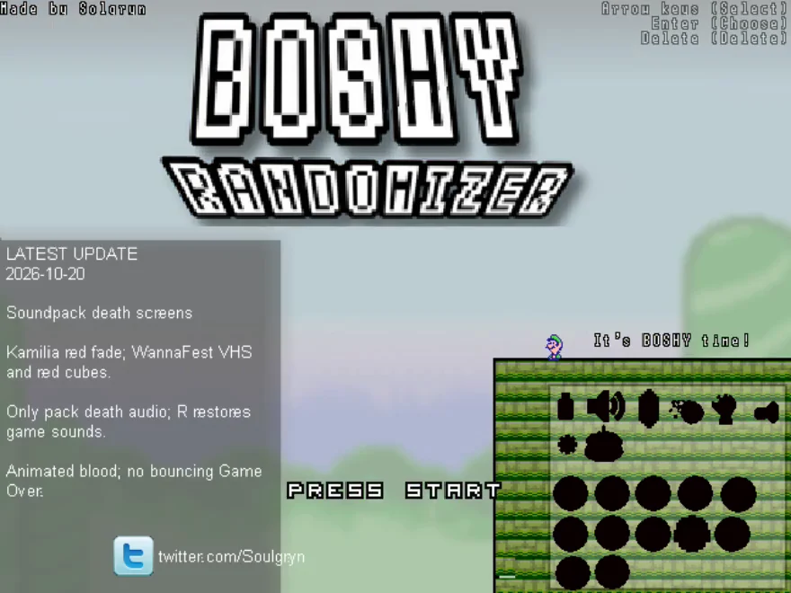
Опубликованная версия: 2026.10.23.1
Предварительная версия Windows · x64
↓ Установщик WindowsУстановка подробно ↗Linux Mint 22 / Ubuntu 24.04 · X11 · amd64
↓ DEB для LinuxУстановка подробно ↗Нужна собственная папка Boshy или ZIP. Оригинальная игра не включена.
Скачать I Wanna Be The Boshy на Grynsoft ↗
Релиз и контрольные суммы ↗Скачай установщик для своей платформы.
Установи и импортируй свою папку или ZIP с Boshy.
Выбери слот, режим и настройки.
Начни забег или поделись сидом с друзьями.
Создаётся отдельная копия игры. Оригинальные сохранения не изменяются; обновление и удаление программы сохраняют забеги.
Трекер — отдельное окно для размещения рядом с игрой или захвата в OBS.
Ctrl+Alt+D открывает текущие данные, тестовые действия и экспорт записей. Ctrl+Alt+M отмечает проблему и сохраняет недавнюю историю без открытия окна. Отчёт может включать снимок только игры.
369 автоматических тестов пройдены. Установка, обновление, удаление, сохранность данных и продолжение проверены в Windows с активным Defender. Проверки Linux описаны в релизе. Не все маршруты и сочетания пройдены целиком.
Опубликованная версия 2026.10.23.1 проверена в Windows 11: установка, обновление, сохранения и перезапуск. Установщик не подписан. Не отключайте антивирус; высокое разрешение DPI и необычные пути учётных записей требуют дополнительных проверок.
Это одиночный рандомайзер. Старое онлайн-меню отключено. Делись сидами, чтобы проходить сопоставимые маршруты с друзьями.
Что-то пошло не так? Эти сведения помогут воспроизвести проблему.
Ctrl+Alt+D открывает диагностику. Ctrl+Alt+M отмечает проблему во время игры; экспортированный отчёт можно приложить к сообщению.
Сообщить о проблеме ↗